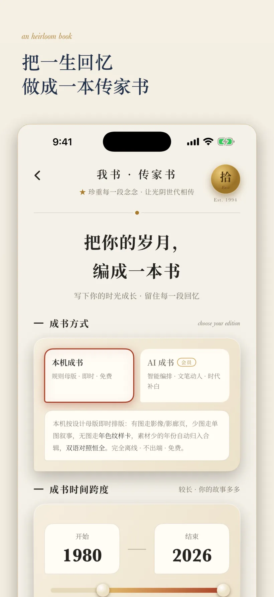

ENSŌ SHIDE
简体中文 · 繁體中文 · English · 日本語ENSŌ SHIDE
简体中文 · 繁體中文 · English · 日本語ENSŌ SHIDE
简体中文 · 繁體中文 · English · 日本語
ENSŌ SHIDE
简体中文 · 繁體中文 · English · 日本語ENSŌ SHIDE
简体中文 · 繁體中文 · English · 日本語ENSŌ SHIDE
简体中文 · 繁體中文 · English · 日本語端上成书
成书不是把截图拼成 PDF。拾得先把回忆投影为页面素材，再经过确定性选版和分页，最后由 iOS 原生 PDF 渲染器逐页绘制。

本机轨是确定性回落路径：即使模型端点不可用或 AI 书稿未通过验证，用户仍可从端上 Memory 生成完整书册。它也把私域原文离端风险控制在用户可选择的范围内。
AI 轨输出 BookEnvelope 后，客户端检查母版白名单、引用逐字命中、防注入、双语完整度、主题主权和照片密度。任一关键规则失败，整册回落本机轨。